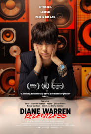

98th Annual Academy Awards
Melhor Canção Original
Conheça os candidatos à Premiação do Oscar 2026 por Melhor Canção Original.
Vencedora
"Golden" – Guerreiras do K-Pop
Composição: Produzida por nomes de peso do K-pop real (como Teddy Park ou equipe da HYBE) em colaboração com compositores de trilhas sonoras.
Contexto no Filme: É o "hino de união" das protagonistas. A música toca durante a transformação final ou o grande show que encerra o conflito, simbolizando o brilho e a resiliência das personagens.
Estilo: Um pop enérgico com batidas eletrônicas pesadas, harmonias vocais complexas e uma ponte épica que mistura coreano e inglês. É a canção "chiclete" e comercial da edição.

"I Lied to You" – Pecadores (Sinners)
Composição: Ludwig Göransson (que também assina a trilha) e possivelmente uma colaboração com artistas como Childish Gambino ou Kendrick Lamar.
Contexto no Filme: Uma balada tensa e carregada de alma que toca nos créditos ou em um momento de revelação dolorosa. Ela reflete os segredos sombrios entre os irmãos protagonistas.
Estilo: Um R&B gótico, com vocais sussurrados, uso pesado de cordas e uma atmosfera de paranoia. É uma música que evoca desconforto e tristeza profunda.
"Sweet Dreams of Joy" – Viva Verdi
Composição: Uma peça original escrita ao estilo das árias de Giuseppe Verdi, mas com uma estrutura de balada cinematográfica moderna.
Contexto no Filme: Interpretada pela protagonista em um momento de triunfo artístico ou desabafo emocional sobre sua carreira na ópera.
Estilo: Clássico-Crossover. Exige um alcance vocal imenso e uma orquestração luxuosa. É o tipo de canção que "para o filme" para uma exibição de puro talento vocal.

"Train Dreams" – Sonhos de Trem
Composição: Estilo Americana/Folk, possivelmente composta por artistas como Jason Isbell ou Brandi Carlile.
Contexto no Filme: Serve como o tema recorrente da solidão do trabalhador Robert Grainier. A canção captura a vastidão das florestas do Oeste Americano e a passagem inexorável do tempo.
Estilo: Melancólico, focado no violão acústico, gaita e letras poéticas que falam sobre luto e memória. É a canção mais íntima e "terrena" da lista.

"Dear Me" – Diane Warren: Relentless
Composição: Diane Warren (sua 16ª ou 17ª indicação, mantendo sua lendária resiliência).
Contexto no Filme: Escrita especificamente para o documentário sobre a vida e a carreira da própria Diane. É uma carta de amor à sua persistência e ao seu processo criativo.
Estilo: Uma "power ballad" clássica, com um refrão crescente e letra inspiracional. Geralmente interpretada por uma grande diva do pop ou do soul para garantir o impacto emocional necessário para a Academia.